Software developers typically use version control systems to coordinate work in a codebase. This enables multiple engineers to contribute to the same code safely.
In the Palantir platform, you can think about data and change management the way software developers think about code: you need a way to allow many people to make changes and interact with the same data without interfering with someone else's work. Global Branching takes the best practices from software development and applies them to the Palantir platform, harnessing a common feature of version control systems called branching.
At a high level, branching allows you to fork your existing environment and work on components of your end-to-end workflow in a contained branch. When you are satisfied with your changes, you can merge the changes introduced by your branch back into the main branch.
Global branches can be created within Foundry applications or directly in the Global Branching application. The diagram below shows how you can use a branching workflow to make changes to resources in the Palantir platform.
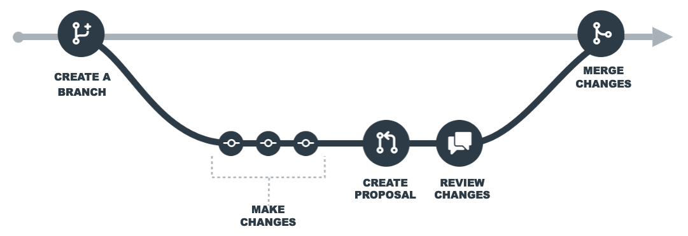
You can create a branch from the branch selector in a Foundry application or through the Global Branching application.
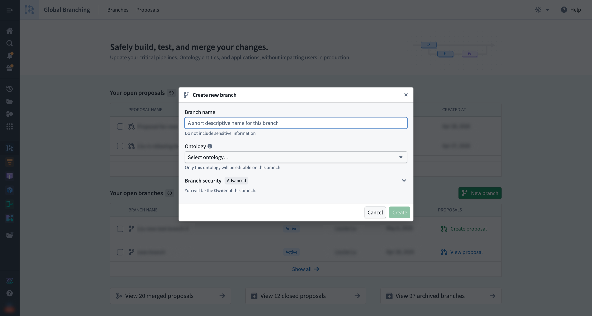
Refer to the Branch security documentation for more information on how ontology, organization, and space are relevant to branch creation.
To access an existing global branch, select it in the branch selector in any supported application. You can also find and navigate to an existing branch from the Branches tab in the Global Branching application.
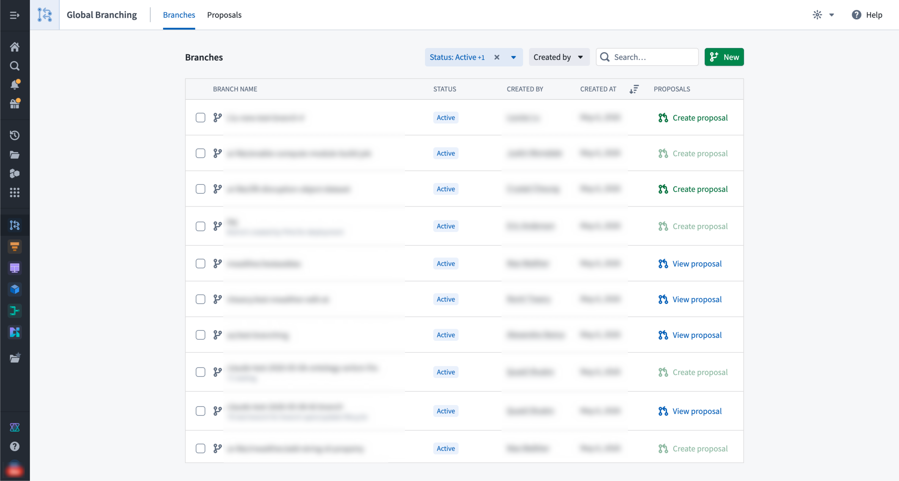
When working on a global branch in a supported application, the branch taskbar will be visible.
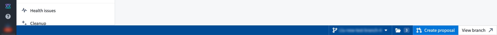
Within your branch, you can make changes to Foundry resources without affecting the main branch. However, creating or deleting Foundry resources on a branch will affect main. This does not apply to ontology resources: you can create, modify, or delete entities on the branch without affecting the main branch.
To start making changes to a resource, some applications require you to add the resource to your branch upfront; others add it automatically after you save your first changes. When upfront addition is required, you will be prompted when you select the branch.
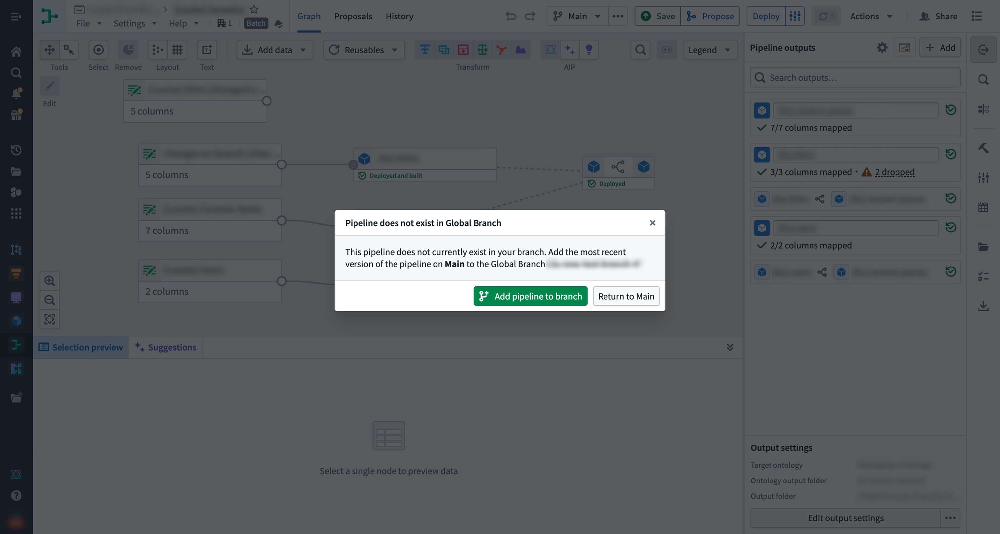
main branchWhile you are making changes to a resource on your branch, the same resource may be updated on the main branch. To pick up those updates, rebase your branch â that is, merge the changes from main into your branch and reapply your previously saved branch changes on top.
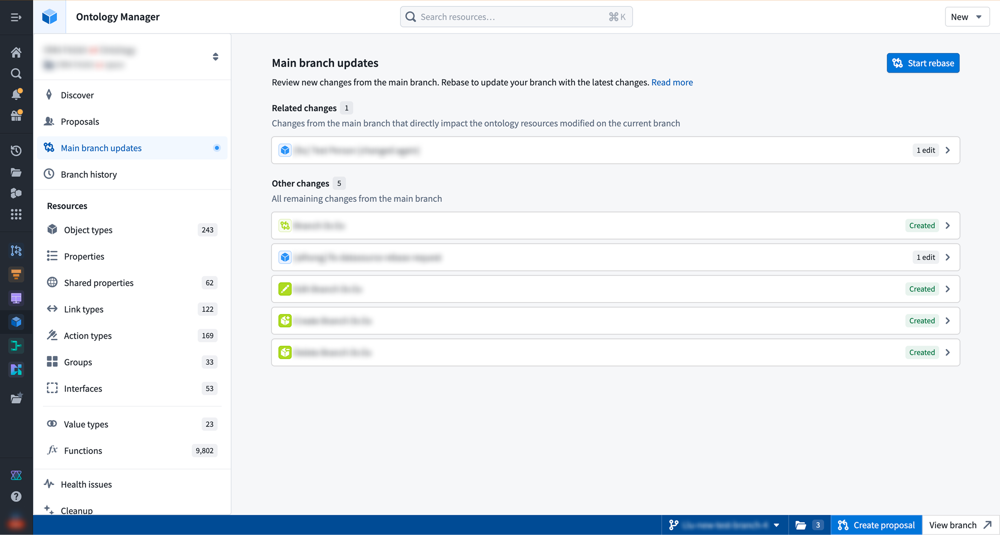
Removing a resource from a branch returns its state to the version of the resource on the main branch. You can remove resources from a branch directly from the Global Branching application or from the branch taskbar.
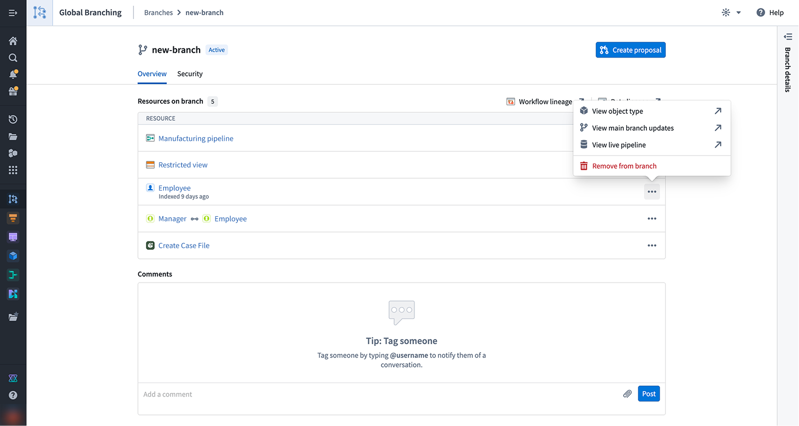
:::callout{theme="warning"} It is possible to break your branch state by removing a resource, so it is important to check the lineage of your resource and ensure that no other branched resources rely on your changes. :::
When you are satisfied with the state of your branch, create a proposal to start reviewing and ultimately merging your changes into the main branch. To get started, either select Create proposal from the Global Branching application or the same option from the branch taskbar. Creating a proposal requires the branch Owner role or space Administrator privileges. Refer to the branch security documentation for more information on branch roles and permissions. A proposal has a description field that allows you to provide information required to review the changes and supports markdown text.
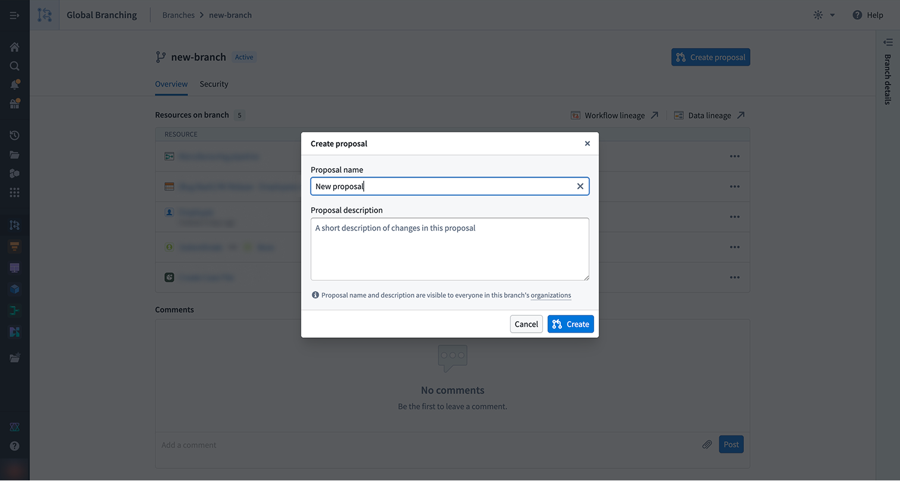
From the proposal page or the branch taskbar, you can use checks to view the readiness of your resources to merge, as well as assign reviewers.
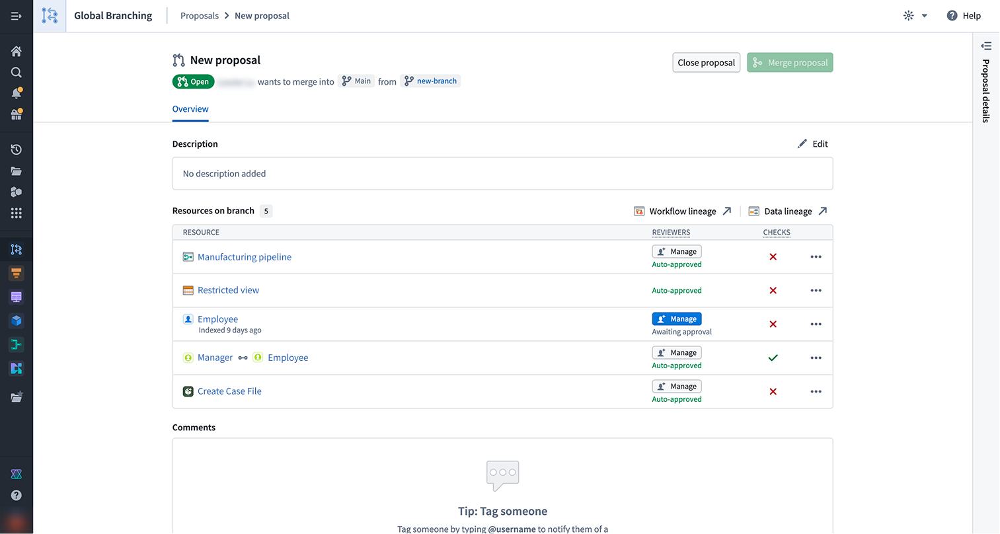
When a proposal is created, checks will run on each resource to determine if the proposal can be merged.
Checks surface any issues that may prevent a resource from merging, including conflicts between the main branch and your current branch as well as required approvals. All checks for branched resources must pass in order to merge a proposal.
In order for a branch to be in a mergeable state, all of its resources need to be mergeable with the latest version of the main branch. When a resource is out-of-date with main or cannot be merged cleanly, the rebasing check fails. You will be redirected to the appropriate application to rebase your branched resource. If there are conflicts between your branched resource and the resource on main, you will have to resolve those conflicts in order for the rebasing check to pass.
To view documentation on how different applications implement rebasing, refer to the integrations page.
Global Branching auto-resolves any non-conflicting changes during a rebase. For true conflicts â where the same property of the same resource was edited on both main and your branch â there is no automatic resolution; you must pick one version manually before the rebase can proceed.
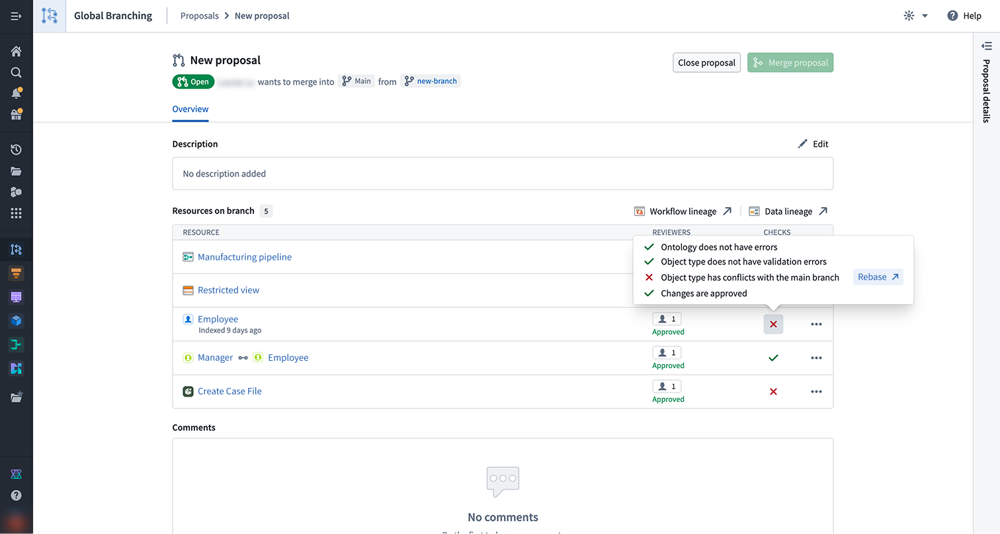
To merge your branch, all approval policies must be satisfied. Non-protected resources still require approval from a user with edit-level permissions, which may be granted automatically when the contributor satisfies the policy. Protected resources require a review from the required reviewers defined in the resource protection and approval policies.
For each resource marked Awaiting approval, select Manage to assign the required reviewers and view the associated approval policies. Once a reviewer is assigned, they will receive a notification.
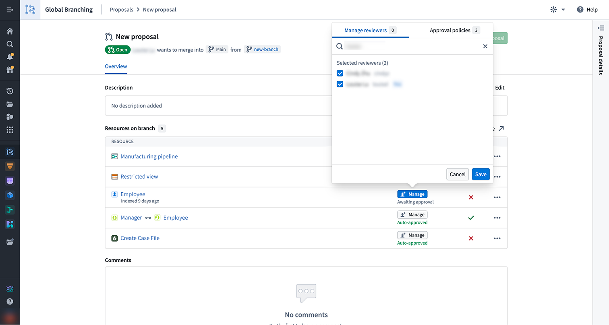
For Code Repositories and Pipeline Builder pipelines, the approval policy is defined within the resource.
Assigned reviewers can access the resource's review page by selecting Review from either the branch taskbar or the Global Branching application.
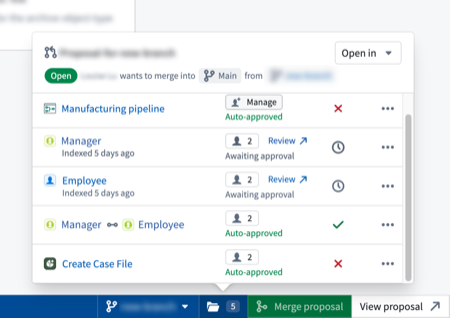
:::callout{theme="warning" title="Rejecting changes to resources on a proposal"}
A single rejection from any user during the review process will cause the resource's changes to be Rejected. This will
prevent the entire proposal from merging. The rejecting user will be required to re-review the changes and Approve them before
the proposal can be merged.
:::
Once changes have been approved and all checks have passed, the proposal can be merged into the main branch by selecting Merge proposal in the branch taskbar or from the Global Branching application. Merge permissions are explained in the branch security documentation.
When merging a proposal, you can trigger builds for the affected resources, including those not directly changed on the branch. There are three build options:
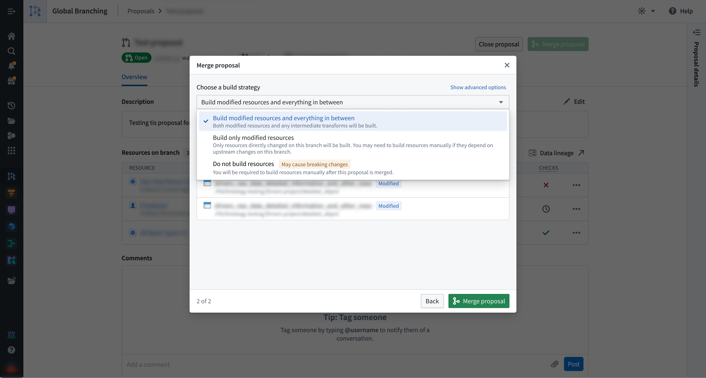
In case of a partial merge failure, the proposal page will show which resources successfully merged and which failed to merge and remain on the branch. You cannot currently revert a partially-failed merge. You must resolve any errors shown and try to merge your proposal again.
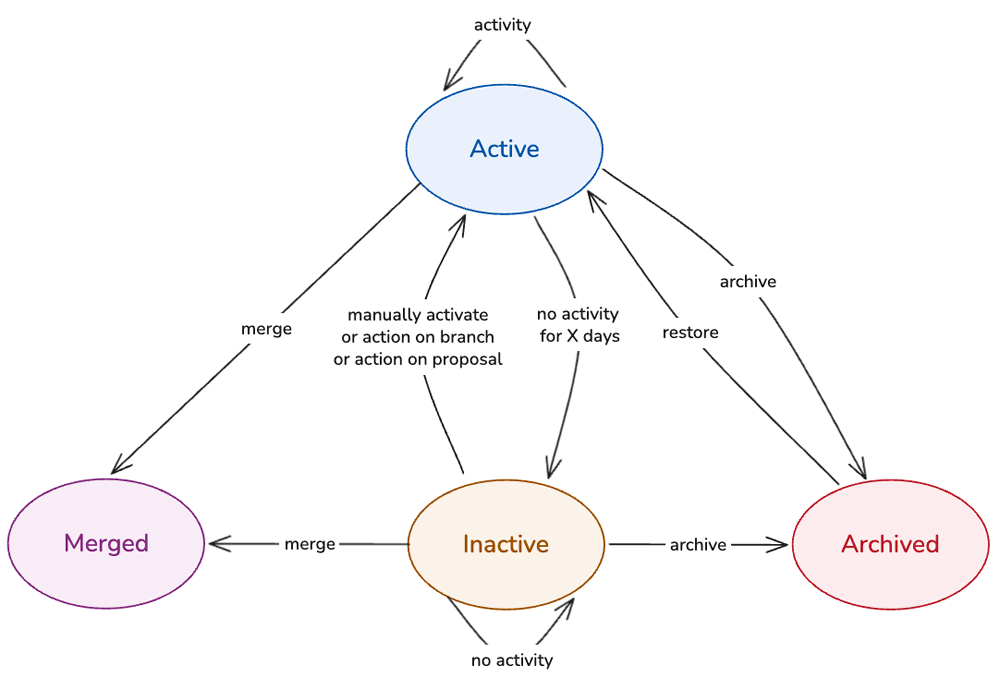
When a branch is created, its status is set to Active. From there, the branch can move into one of the following states: Inactive, Archived, or Merged. The four available branch states are defined as follows:
Active: A branch that is being worked on or going through the merge process. Data built or indexed on an active branch is retained while it stays active.
Inactive: A branch that is automatically marked as inactive after a configurable period of no activity. In this state, ontology resources are de-indexed, and data deletion follows after a specified number of days. Builds of resources on an inactive branch will immediately fail. When a branch is marked as inactive, branch owners will receive both an email notification and an in-platform notification.
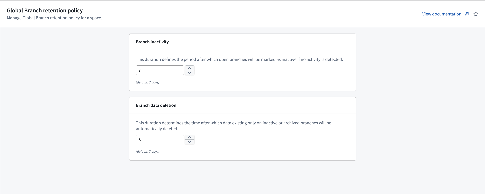
A dialog warns you that the branch is inactive when you open a resource on it. Select Activate branch to activate the branch. If you instead close the dialog, you can continue interacting with the resource, although this is not recommended.
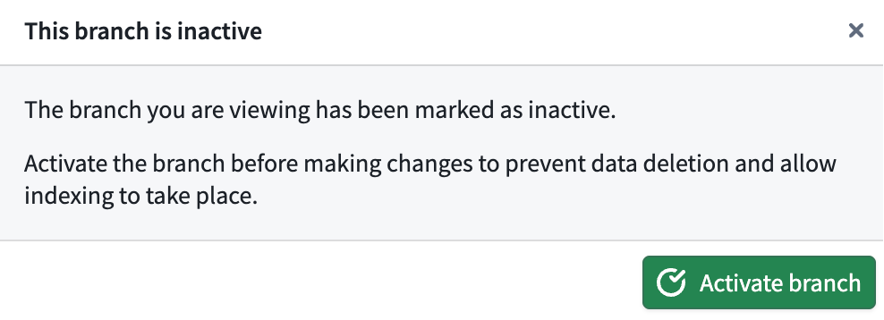
Archived: A branch that is no longer being worked on; archiving is always manual. Branch owners will receive both an email notification and an in-platform notification. De-indexing, build failure, and data deletion on archived branches work in the same way as on inactive branches. Metadata, such as resources previously modified, is retained, and archived branches can be restored. Archived branches do not appear in the branch selector, but can be opened and restored in the Global Branching application.
A dialog warns you that the branch is archived when you open a resource on it. Select Restore branch to restore the branch. If you instead close the dialog, you can continue interacting with the resource, although this is not recommended.
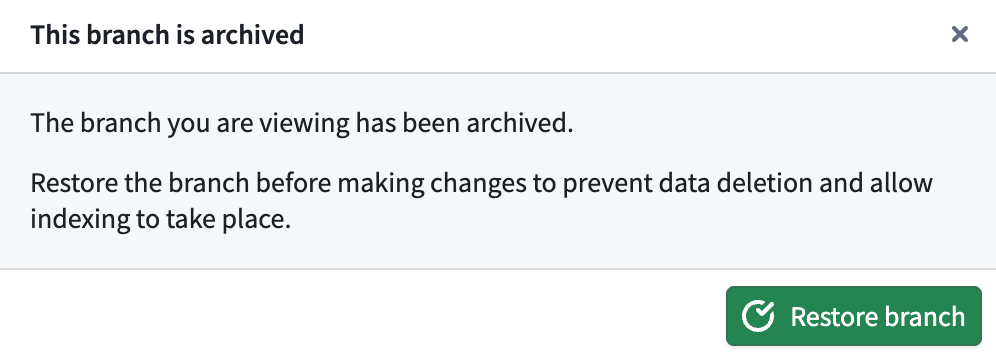
Merged: A branch whose proposal has been merged. Merged branches are terminal: they cannot be restored, do not appear in the branch selector, and are only accessible from the Global Branching application.
When a branch has been inactive or archived, de-indexing of ontology entities or deletion of logic and data may have occurred for resources on the branch. If the branch is later activated or restored, you may need to perform the following actions to replace deleted or de-indexed data:
A proposal can be in one of three states:
main branch.